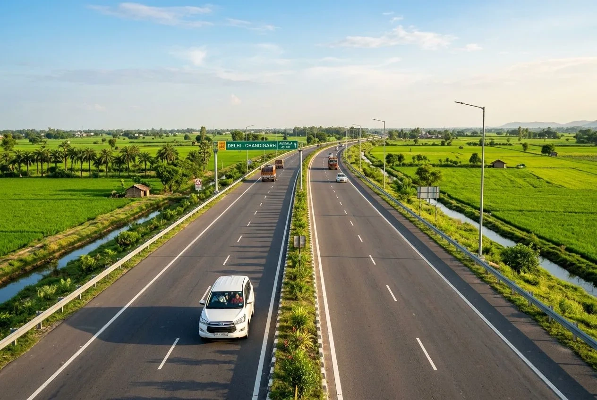

Home / Blog / Lucknow to Ayodhya Travel Guide

In this guide
If you are planning to visit the holy city of Ayodhya from other parts of India or abroad, you will likely fly into the **Chaudhary Charan Singh International Airport (LKO)** in Lucknow, which is the nearest major airport with excellent connectivity. From Lucknow, reaching the birth birthplace of Lord Ram is a smooth and direct journey. Read our comprehensive transit guide below to compare roads, taxi costs, buses, and trains. If you are calculating the overall expenses for your yatra, read our complete Ayodhya trip cost and budget planner.
Distance & Travel Time Overview
The distance between Lucknow and Ayodhya is approximately 135 kilometers (84 miles). Depending on your chosen mode of transport, the average travel time is as follows:
- Private Taxi / Cab: 2.5 to 3 hours via the NH-27 four-lane highway.
- Train: 2 to 2.5 hours (Vande Bharat Express takes only 1 hour and 50 minutes).
- Intercity Bus: 3.5 to 4 hours.
Lucknow to Ayodhya by Road (Car & Taxi)
Driving by road via NH-27 (Lucknow-Gorakhpur Highway) is the most flexible option. The highway is a well-maintained four-lane road with plenty of pure vegetarian family-friendly dhabas and fuel stations along the route.
Estimated Taxi Fares (Lucknow Airport / Station to Ayodhya)
| Vehicle Type | Passenger Capacity | Estimated One-Way Fare | Best For |
|---|---|---|---|
| Sedan (Dzire / Etios) | Up to 4 Adults | ₹2,500 - ₹3,000 | Couples & Small Families |
| SUV (Ertiga / Triber) | Up to 6 Adults | ₹3,500 - ₹4,000 | Medium Families with luggage |
| Premium SUV (Innova Crysta) | Up to 7 Adults | ₹5,000 - ₹5,500 | Senior Citizens (Superior Comfort) |
| Tempo Traveller | 12 to 16 Passengers | ₹8,500 - ₹10,000 | Large Groups & Joint Families |
Dhaba Recommendation: While driving down NH-27, stop at **Bhajan Cafe** or **Saraswati Dhaba** near Barabanki for clean washrooms and freshly prepared clay-oven tandoori tea with hot pakoras.
Lucknow to Ayodhya by Train
Rail transit is fast, cost-effective, and highly comfortable. Trains run daily from Lucknow Junction (LJN) or Charbagh (LKO) stations directly to Ayodhya Dham Junction (AY) and Ayodhya Cantt (AYC). If you are looking to combine your visit with a trip to Varanasi to witness the Ganga Aarti, check our direct Ayodhya Varanasi Ganga Aarti guide.
Key Daily Trains:
- Lucknow-Gorakhpur Vande Bharat Express (22550): Departs Lucknow at 19:15, arrives Ayodhya at 21:05. (Superfast, clean, premium dining onboard).
- Ayodhya Express (14206): Departs Lucknow daily at 03:25, arrives Ayodhya Cantt at 07:15.
- Kaifiyat Express (12226): Departs Lucknow Charbagh at 01:55, arrives Ayodhya at 04:30.
Bus Options
Uttar Pradesh State Road Transport Corporation (UPSRTC) operates frequent direct non-AC and Janrath AC buses from Alambagh Bus Terminal and Kamta crossing in Lucknow. Janrath AC bus tickets range from ₹250 to ₹350 per seat. Buses run every 30 minutes, making this an extremely affordable alternative for solo travelers.
Frequently Asked Questions
How much is the taxi fare from Lucknow Airport to Ayodhya?
A standard one-way private taxi (Sedan) from Lucknow Airport to Ayodhya costs around ₹2,500 to ₹3,000, inclusive of toll taxes.
Is there a direct flight between Lucknow and Ayodhya?
No. There are no commercial flights between Lucknow and Ayodhya since they are only 135 km apart. Roads and trains are the primary transit methods.
Does Vande Bharat train run daily between Lucknow and Ayodhya?
Yes, the Lucknow-Gorakhpur Vande Bharat Express operates 6 days a week (except Saturdays), taking just under 2 hours.
Book your Lucknow-Ayodhya Transfer
We handle Lucknow pickup & drop
Book our packages and get private AC car transfers straight from Lucknow airport/station to your Ayodhya hotel.